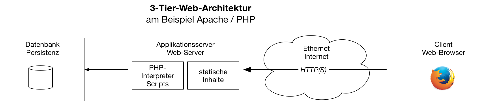
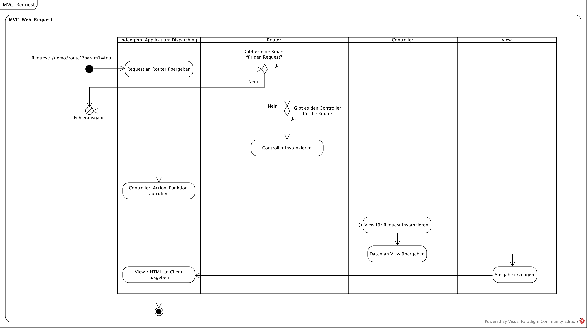
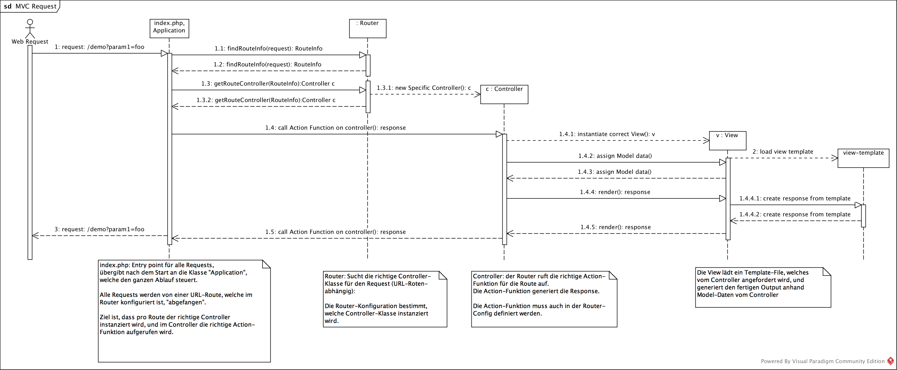
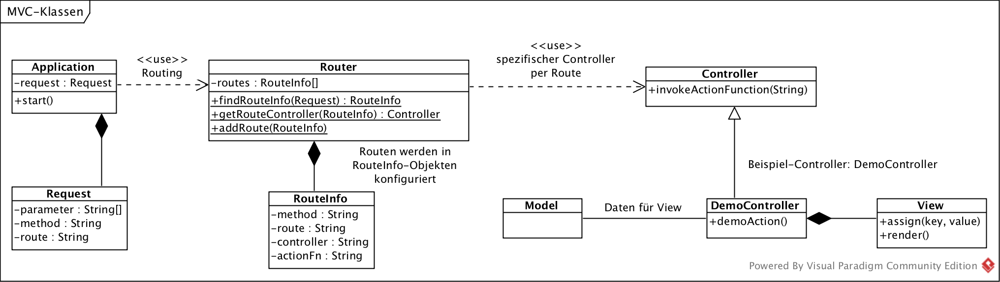

{% extends "../_base_template.html" %}
{% block title %}Lektion 3 - Web-MVC-Architektur{% endblock %}

{% block sections %}
<section data-markdown>
<textarea data-template>
<i class="fas fa-graduation-cap"></i> M151 - DB in Web-App einbinden
=============================

Heutiges Ziel
--------------

* Sie kennen die Begriffe "Routing", "Controller", "Action-Methode", "View"
* Sie kennen die Aufgabe des Routings und der Controller
* Sie können das Basis-MVC-Gerüst selbständig programmieren
</textarea>
</section>

<section data-markdown>
<textarea data-template>
<i class="fas fa-graduation-cap"></i> Web-MVC-Framework
=============================

Wir erinnern uns: Das MVC-Design-Pattern teilt die Verantwortlichkeiten von Code in:

* **M**odel (Daten)
* **V**iew  (Ansicht)
* **C** (Logik)


<i class="far fa-hand-point-right"></i> Wie passt dies nun in die Web-Architektur?



* Was / Wo sind die **Models**?
* Was / Wo sind die **Views**?
* Was / Wo sind die **Controller**?
</textarea>
</section>

<section data-markdown>
<textarea data-template>
<i class="fas fa-graduation-cap"></i> Web-MVC-Framework
=============================

Wir betrachten MVC aus Sicht des **Applikationsservers** unserer Standard-Architektur:


* Die **Models** sind etwelche Daten aus einer Datenbank.
* Die **Views** sind HTML-Seiten, die der Browser darstellt: Sie werden von der Business Logik / den Controllern ausgeliefert
* Die **Controller** sind die "Empfänger" von HTTP-Requests: Sie stellen die Verbindung zwischen Daten, und Views her, sie stellen die Business-Logik zur Verfügung.

Eine Web-Applikation besteht (meist) aus vielen Funktionen / vielen Seiten. Ziel des Web-MVC-Modells ist es, zusammengehörige Funktionalität in einem **Controller** zusammenzufassen. Ein Beispiel:

* Ihre Seite besteht aus diversen Seiten / URLs:
  * Login-Seite (`/login`, `/logout`)
  * To-Do-List-Seiten (Liste + Eingabe mit Anzeige, Speichern etc.), `/todo/list`, `/todo/show?id=5`, `/todo/edit?id=5`
  * Benutzer-Administration (Liste + Eingabe mit Anzeige, Speichern etc.), `/user/list`, `/user/show?id=5`, `/user/edit?id=5`
* Ihre Business-Login gliedern Sie in Controller, welche zusammengehörige Funktionalitäten abbilden:
  * Der `LoginController` kümmert sich um die Login/Logout-Funktionalität
  * Der `TodoController` kümmert sich um die Todolist-Funktionalität
  * Der `BenutzerController` kümmert sich um die Benutzer-Funktionalität

<i class="far fa-hand-point-right"></i> Die Funktionalität wird jeweils vom Browser angefordert (z.B. indem der User auf einen Link klickt, sich einloggt etc.).

<i class="far fa-hand-point-right"></i> Wir müssen nun dafür sorgen, dass Requests vom Browser von der richtigen Business-Logik abgearbeitet werden. <br />**Ziel ist, dass unsere Requests in einer
dafür vorgesehenen Methode in einem Conroller landen**. Wie können wir dies bewerkstelligen?

</textarea>
</section>


<section data-markdown>
<textarea data-template>
<i class="fas fa-graduation-cap"></i> Ablauf eines Requests
=============================

**Ziel ist, dass unsere Requests in einer dafür vorgesehenen Methode in einem Conroller landen**

Unser MVC-Framework setzt dies in folgenden Schritten um:

**1. Dispatching:**

Alle Requests landen an einem Entry Point (index.php): Aufgabe dieses Entry Points ist es, das MVC-Framework „in Gang“ zu bringen: Anhand des Requests / der Route muss die richtige Controller-Klasse instanziert werden, und darin die richtige Action-Funktion aufgerufen werden.

**2. Routing:**

„Routing“ nennt man das Zuweisen einer URL-Route (eines URL-Pfades) zum richtigen Controller / zur richtigen Action-Funktion. Ein Router entscheidet anhand des Requests, welcher Controller diesen Request abarbeiten wird. Der Router wird im Dispatching instanziert / abgefragt.

Der Router nimmt folgende Parameter des Requests für die Ermittlung der Route:
* den URL-Pfad der angeforderten URL (z.B. „/personen/list“)
* Die HTTP-Methode (z.B. „GET“)
* weitere HTTP-Parameter (z.B. `?id=5&name=alex`)

**3. Controller:**

Nachdem der Controller gefunden wurde, übergibt das Dispatching die Kontrolle an ihn, resp. an die richtige Action-Funktion. Im Normalfall handelt eine Controller-Klasse mehrere Routen ab (z.B. alle Routen, um denen es um Personen-Requests geht), und innerhalb des Controllers wird pro Route eine „Action-Funktion“ aufgerufen, eine Funktion, welche den Request tatsächlich behandelt.


**4. View:**

Es ist nun die Aufgabe der Action-Funktion im Controller, die notwendige Business-Logik umzusetzen: Sie sucht die für den Request notwendigen Daten zusammen (Model), und instanziert eine View-Klasse.
Die View-Klasse sorgt für die Aufbereitung der Daten in das Ausgabe-Format (z.B. in HTML).


**5. Ausgabe an den Client**

Nachdem die View den Output generiert hat, wird dieser an den Client ausgegeben. Der Request ist somit mit einer Response beantwortet und damit abgeschlossen.

</textarea>
</section>

<section data-markdown>
<textarea data-template>
<i class="fas fa-graduation-cap"></i> Ablauf eines Requests - als Aktivitätsdiagramm
=============================



</textarea>
</section>

<section data-markdown>
<textarea data-template>
<i class="fas fa-graduation-cap"></i> Umsetzung in unserem Applikations-Skelett
=============================

Wir haben das Applikations-Skelett bereits in Betrieb genommen: Unser `index.php`-File nimmt bereits **alle** Requests entgegen, welche nicht auf ein richtiges File zeigen.
Dies ist unser Applikations-Einstieg, unser **Dispatching**. Hier **beginnt** unsere Applikation:

```php
<?php
// index.php --- Dies ist unser "Dispatcher"

# lade composer autoloader:
require_once(__DIR__.'/vendor/autoload.php');

# extrahiere URL-Route:
$path_info = isset($_SERVER['PATH_INFO']) ? $_SERVER['PATH_INFO'] : '/';

# extrahiere weitere Request-Parameter:
$request_params = $_REQUEST;

// Schritt 1: Routen konfigurieren (welche Routen bieten wir an?) --> Das Routing muss Auskunft darüber geben, welche URL an welchen Controller/Methode geschickt wird
// Schritt 2: Anhand der Route den richtigen Controller instanzieren
// Schritt 3: Im instanzierten Controller die richtige Methode aufrufen
// Schritt 4: Diese Methode stellt die Business-Logik dar und generiert die View in Form einer HTML-Antwort
```

Aufgabe
---------

Versuchen Sie nun, folgendes programmatisch umzusetzen:

* ** Routen definieren**: Wie definieren Sie Routen? Welche Datenstruktur ist geeignet, um anhand einer URL den richtigen Controller / die richtige Methode zu finden?
* ** Controller finden**: Programmieren Sie die Logik, um anhand der requesteten URL den richtigen Controller zu finden / zu instanzieren.
* ** Action-Methode aufrufen**: Programmieren Sie die Logik, um schlussendlich die richtige Methode im instanzierten Controller aufzurufen.
* **Ziel:** Ihr Programm kann anhand der URL den richtigen Controller instanzieren, die richtige Methode aufrufen und aus dieser ein Stückchen HTML ausgeben.

** Hinweise für PHP**:

* Instanzieren einer Klasse anhand des Namens:
```php
<?php
   // Controller M151\Controller\MeinController instanzieren:
   $controllerName = 'M151\Controller\MeinController';
   $controllerInstanz = new $controllername();
```

* Aufrufen einer Objekt-Methode anhand ihres Namens:
```php
<?php
   // Methode list() in Klasse MeinController aufrufen:
   $actionMethode = 'list';
   $resultat = $controllerInstanz->$actionMethode();
```
</textarea>
</section>

<section data-markdown>
<textarea data-template>
<i class="fas fa-graduation-cap"></i> Weitere Hilfestellungen
=============================

Die folgenden Diagramme sind als weitere Hilfestellungen zu verstehen: **Sie müssen sich nicht daran halten**, sie sollen Ihre eigene Architektur entwickeln.
Die Erfahrung hat aber gezeigt, dass das Grundgerüst recht schwierig ist, wenn man so etwas noch nie gemacht hat.

MVC-Sequenzdiagramm
----------------------
Siehe Original auf Moodle:



Vorschlag MVC-Klassen
------------------------

Siehe Original auf Moodle:




</textarea>
</section>
{% endblock %}
